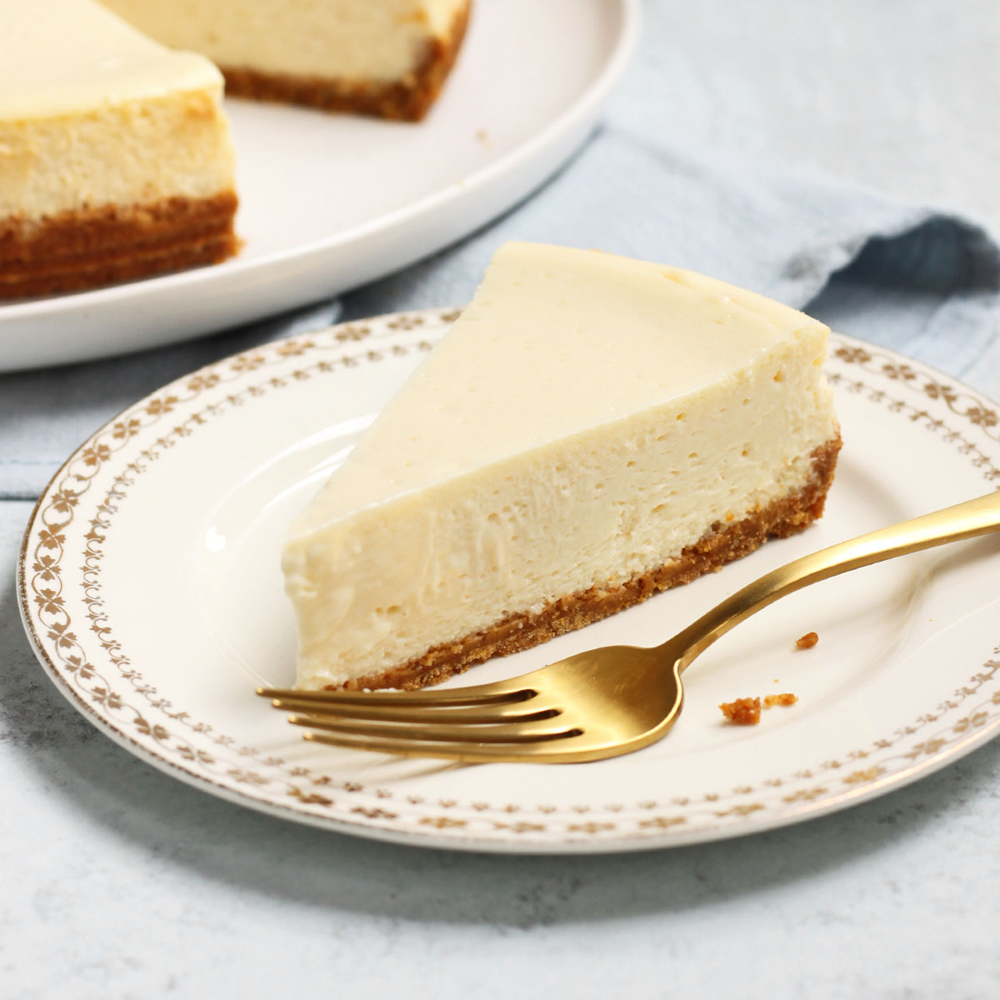

Lasagna

Description
The greatest dessert known to humankind.
Ingredients
- Cheese (LOTS)
- Sugar (LOTS)
- Pie crust
- Cream cheese
- Maybe some more sugar.
- Definitely more cheese.
Steps
- I honestly have no idea how to do this, so start by pouring your pie crust into a pie shaped baking dish.
- Mix in cheese and sugar (maybe some butter?).
- Add a dollop of cream cheese on top.
- Need more sugar to mask the flavor.
- CHEESE.
- Preheat your oven till it's boiling lava hot.
- Flatten your cheese mixture by spreading it with a knife.
- Bake until you can't take it any more.
- Refrigerate.
- Eat once cooled.